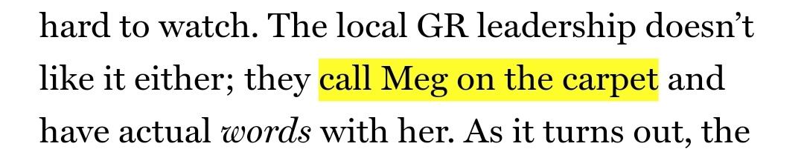

be/get called on the carpet, American English, informal. To be criticized by someone in authority because you have done something wrong.
be/get called on the carpet，美式英语，非正式. 因为做错了事，而被上司叫去训斥、批评.
如果你工作，做错了什么事，老板把你找过去训话，要求你解释、批评你；如果你是学生，做错了什么事，老师或年级组长或教导主任或校长把你找过去训话，要求你解释、批评你；如果你是公司老板或项目负责人，你手下有个人工作没有做好，你把他单独叫到一个地方谈论这件事；如果你是老师，有个学生不好好学习或打架或违反了什么校规，你把他叫到办公室批评他……在这些情况下都可以用这个词. 因为我们生活中肯定会有这种上下级的关系，难免会有训话/被训话的事情发生，这个词还是总能用得到的.
而且被公安局请去喝茶之类的应该也能用得到这个词，比如因为散布谣言被训诫就可以用这个词（离我写这个词时最近的一个事件就是医生李文亮因传播“SARS”谣言被训诫，这种事情以前有很多、以后还会有很多）.
词典里的词条、例句什么的都是被动式的，不过我觉得用主动的形式也没什么问题，比如 I have called this student on the carpet. 或者灵活点变成 on my carpet 我觉得别人也是可以理解的. 动词 call 也有很多可以替换的选项：have, get, put, haul 都可以，比如《华盛顿邮报》就在对“斯坦利·麦克里斯特尔（Stanley McChrystal）事件”1发表评论时就说：“This isn’t the first time McChrystal has been hauled out on the carpet."（这不是麦克斯特尔第一次被叫回去训话.） 用了 “haul out” 这个动词.
这个用法是一个非常常见的用法，我觉得英语母语的人是一定会知道的.
To call someone on the carpet is a common idiom (some would even say common enough to be a cliché) meaning to reprimand a subordinate, or demand that they explain their actions.
To call someone on the carpet 是一个很常见的惯用语，一些人可能甚至会说它常见到“陈词滥调”2的程度了. 它的意思是谴责下属，或要求他们对自己的行为作出解释.
He was called on the carpet by his boss to explain his excessive spending. 他被老板叫去，要他解释为什么会超支.
I got called on the carpet for being late. 我因为迟到被叫去训了一顿.
call on the carpet 这种用法从至少 1881 年就开始用了，那个时候是 “carpet” 这一个单词直接用作动词，表示“为进行调查或谴责进行传唤”（to summon for the purpose of enquiry or reprimand），这个解释是 19 世纪中期的《牛津惯用语词典》中的. 后来这个惯用语就发展为一个词组了：be called on the carpet 等价于 to receiving a scolding（接受责骂），这个隐喻是出自一个仆人被叫到男主人或女主人面前，从一个没有铺地毯的房间进到一个铺地毯的房间.（the metaphor being taken from a servant called into the presence of the master or mistress from an uncarpeted into a carpeted room.）也就是说，这个词典认为这个常用语的【来源是主仆】，主人的屋子是铺着地毯的而仆人的屋子里不铺地毯，主人把仆人叫到自己的房间就是要斥责仆人.
由 Richard A. Spears 编纂的《美国常用语词典》和《美式英语短语词典》在介绍来源时把这个常用语从主仆意象更新为了上下级意象，“这个短语展示一个人被叫到他老板[铺着地毯的]办公室里准备受训的景象.”（The phrase presents images of a person called into the boss’s carpeted office for a reprimand.）也就是说 Spears 这个人认为这个常用语的【来源是上下级】，上级的办公室铺着地毯而下级工作的地方不铺地毯，上级把下级叫到自己办公室是为了训斥下级.
但实际上，这个常用语还有另一种很可能的来源，那就是没有动词 “call” 的这个【词组 “on the carpet”】，意思是“正在考虑”（under consideration）. 在 19 世纪这个用法很常见，在谷歌新闻档案中经常会看到这种用法，一般是用在法案、决议、议题或政治上争论的问题“正在考虑当中”（bills, resolutions, questions, or political issues being “on the carpet”）.“正在考虑” 这个意思中 “carpet” 的意思不是地毯而是桌布（tablecloth），特别指议会桌上的桌布（carpet of the council table），议会桌就是大家围在一起讨论问题的那种桌子.
之所以能把 “carpet” “无中生有” 出一个“桌布”的意思，是因为 on the carpet 这个词组很有可能是从法语 “sur le tapis” 直接翻译过来的. 这里 “sur” 是 “在……上面/on” 的意思，“tapis” 除了有 “地毯” 的意思，还有 “桌毯” 的意思，而连在一起的 “sur le tapis” 确实是法语中一种常见的表达法，大概就是 “拿到桌面上来说”3. 这种来源的推断是 ODI4 阐释的，虽然 ODI 没有给出引用，但还是很可信的嘛，应该比那个【主仆】起源假说、【上下级】起源假说更可信一点，因为有法语常用词组做保证，还解释了为什么介词是 “on” 而不是 “onto”，毕竟把一个人叫到地毯上的话应该用 “onto” 的吧.
我正在看的一部剧《守望尘世》，看到第二季第九集有个疑问就去谷歌搜索，搜出来第一篇就是这篇文章，里面在描述一个情节时就用到了这个用法（见下图）. 读到这里时我还一愣，最开始我自然地以为是把那个人叫到地毯上，还仔细回忆了一下那间屋子里好像没有地毯，即便有也没给特写，然后就猜出来这是个俚语，意思很容易也猜出来了，毕竟我看过剧我知道情节. 然后就好奇这个俚语有什么典故没有就开始查，最后就写了这篇博客.

我准备写这篇博客的时候有点怀疑自己是不是应该取消这个栏目——语言表达法不是在网上随随便便一找就一大堆么？我为什么要重复写呢？我建立这个博客站的初衷是只写那些我原创的东西，写那些如果我不写就没人会写的东西. 我希望搜到我某篇文章的人能看到我解决问题的每一个细节，而这些细节是互联网上没出现过的——但凡我遇到的别人也遇到了，或者是别人的文章对我解决问题有所帮助，我就会摆上一个超链接——我希望我的文章对看到它的人有所帮助，而语言表达法这个栏目好像并不能完成这个使命.
我转念一想，还有那些不是通过搜索来到这里的人呀，那些一直关注这里的读者，或者是搜索到这里后想随便看一看的人，对他们来说这个栏目就会有帮助的啊，因为他们不是搜索来到这里的，那这里的文章对他们来说就有可能是他们不知道而且没遇到过的问题呀，直接从我这里学点新东西不也挺好嘛，因为我会把资源整合好，就省得这些读者自己再去花时间查资料了.
于是我就开始写了，写得时候发现在中文的互联网上是没有这些内容的，中文互联网上对 call sb. on the carpet 的解释只停留在【主仆】起源假说那里，我突然就觉得有了意义：虽然我只是把我看到的英文的文章的重点用自己的语言重新写了一下，有些句子还是我直接对着翻译的，但翻译也是原创啊，我填补了中文互联网上对这个常用语解释的空白啊，对于中文读者来说——即便是通过搜索看到这里的——这当然是一篇非常有帮助的文章.
我希望自己以后再写这个栏目时好好思考一下原创性的问题以及对读者有帮助的问题，我选择介绍的语言表达法应该是那种平时生活中会用得到的，频率应该在“每个星期会至少用一次这个表达”的频率，比如这个“把某人叫去训话”就是一个差不多这个频率出现在生活中的表达. 还有就是这种表达应该在该语言母语环境中比较常用，那些太新的梗就没必要介绍了. 最后是这个栏目的更新频率，我觉得大概 6 个星期更新一次比较合适.
McChrystal 是前美军驻阿富汗最高指挥官，2010 年 6 月他在 Rolling Stone（《滚石》杂志）上发表对白宫文职人员的不当言论，被奥巴马勒令回华盛顿解释，因为美国宪法规定，军方无权干涉国家内政.（抄自百度百科 “麦科里斯特尔” 词条.）这里奥巴马让他“回华盛顿解释”就用到了这个用法. ↩︎
cliché 是一个法语词汇但在英语中非常非常非常常见，我都至少见过四五次了，我还在一本数学书里见过一次. 是“口头禅，陈词滥调”的意思，是一个阳性名词. 英语音标是/kliːˈʃeɪ/. 法语例句：Ca conversation est pleine de cliché. 他的话都是陈词滥调. （抄自《罗贝尔法汉词典》） 英语例句：She trotted out the old cliché that “a trouble shared is a trouble halved.” 她又重复了“与人说愁愁减半”的陈词滥调. （抄自《牛津高阶英汉双解词典》） ↩︎
例句：Cette histoire est encore revenue sur le tapis. 这件事又一次成了人们讨论的议题. （抄自《罗贝尔法汉词典》 tapis 词条.） ↩︎
咦？孤陋寡闻如我，ODI 是啥？我没查到，看上去是研究语言的组织？求告知. ↩︎